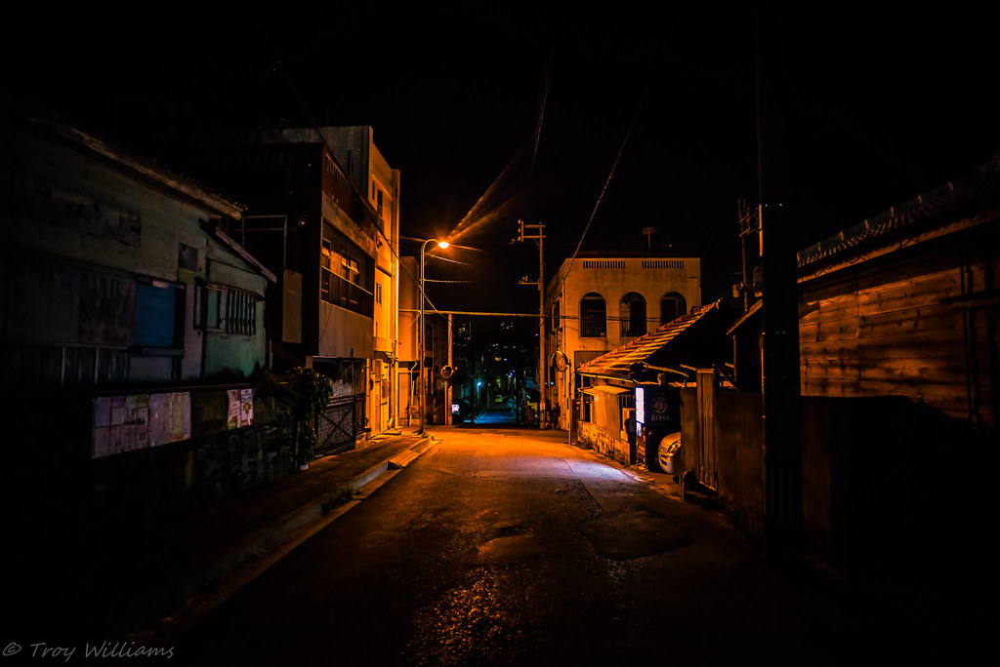
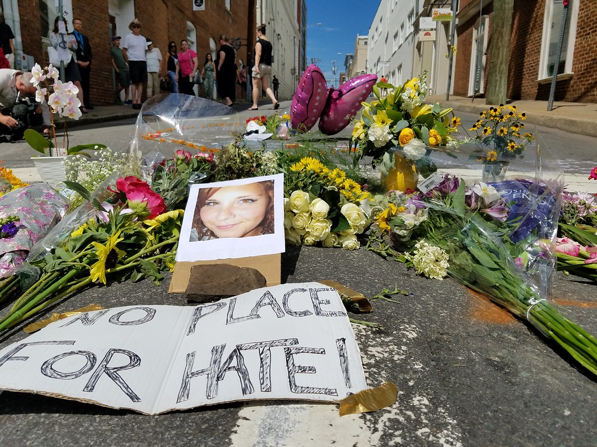

As civil human beings, it is of course wrong to use violence against others. But what if you were in a kill or get killed position? Or even worse, if your friends and family were at risk and you had to defend them?
This article will discuss the theme of violence in different contexts such as politics, ethics, and crime.
Let's say you are walking outside at night for a quick run to the nearest store, when suddenly a stranger jumps on you.
"D610 night street 20mm" by troy_williams is licensed under CC BY-NC 2.0.
In this case, you have two options; give up, or to fight back. If the person just wanted your wallet or credit card, the safest and possibly wisest option would be to give them what they want to avoid risk. But what would you do if they wanted more than that? What if they wanted your life?
Violence in crime is different from martial arts. In martial arts, it is against the rules to injure the opponent. Criminals don't care. They are already breaking the rules by attacking you. This TedX talk discusses this theme in more detail.
In a situation where the opponent wants to hurt you, there's really no other option than to fight back with violence. (But of course, attacking someone without reason is illegal and obviously unethical)
To conclude, violence can only be justified when used for self-defense.
Around the world, many are getting injured or killed in violent protests. One infamous example is the death of Heather Heyer at a white supremacist protest, the "Unite the Right" rally.
"Charlottesville - The Day After - memorial for Heather Heyer & Va. State Troopers" by Retronaut is licensed under CC BY-NC 2.0.
She was one of the counterprotesters, protesting peacefully when a car crashed into the group and violently killed Heather Heyer. Needless to say, this was a death caused by unnecessary violence; people must try to protest peacefully before turning to it.
The only times violence should be allowed is when the government or the group of people that run it are depriving the people of basic human rights such as the right to have and express an opinion and there is no way to peacefully solve it. For example, Ukraine defending itself when Russia attacked can be justified since it is very difficult at the moment to solve this by talking. However, other countries using violence against Russia can trigger a worldwide war, which could be catastrophic. So even though it's a slow process, for the time being, economic sanctions may be the best options we, other countries, have.
To summarize, violence in politics generally should be avoided unless the issue cannot be solved by discussion and there is urgency to the issue.
Generally, we should avoid hurting others since it is morally a "wrong" thing to do. However, reality is not that kind. Sometimes, violence is necessary when our basic rights are being taken away.
TEDxTalks. “The Paradox of Violence | Tim Larkin | TEDxGrandForks.” YouTube, YouTube, 6 Apr. 2015, https://www.youtube.com/watch?v=HROsqfsJkx8.
“Charlottesville: 'Unite the Right' Rally, State of Emergency.” Time, Time, https://time.com/charlottesville-white-nationalist-rally-clashes/.
“Russia and Ukraine Peace Talks Likely Have Nothing to Do with 'Peace'.” NBCNews.com, NBCUniversal News Group, 23 Apr. 2022, https://www.nbcnews.com/think/opinion/russia-ukraine-peace-talks-likely-nothing-peace-rcna25583.
Borrell, Josep. “Can the Russian Economy Withstand the Sanctions?” Real Instituto Elcano, 20 Apr. 2022, https://www.realinstitutoelcano.org/en/analyses/can-the-russian-economy-withstand-the-sanctions/.